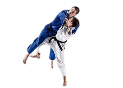

Judô Olimpíadas
Historia do Judô
Incluído no programa olímpico durante os Jogos de
Tóquio 1964, o judô possui uma rica história no maior evento esportivo mundial.
Embora tenha sido retirado da Olimpíada realizada na Cidade do
México em 1968, o esporte retornou de forma definitiva em Munique 1972.
Foi na volta do judô ao programa olímpico que o Brasil conquistou sua primeira medalha, com o lendário Chiaki Ishii.
Historicamente, os japoneses, criadores da arte marcial, são os principais medalhistas,
seguidos pela França, que ocupa a segunda posição.
Somando mais quatro medalhas durante a Olimpíada de Paris 2024,
o Brasil segue se aproximando dos primeiros colocados do ranking, se consolidando com uma das
principais potências do judô na atualidade.
